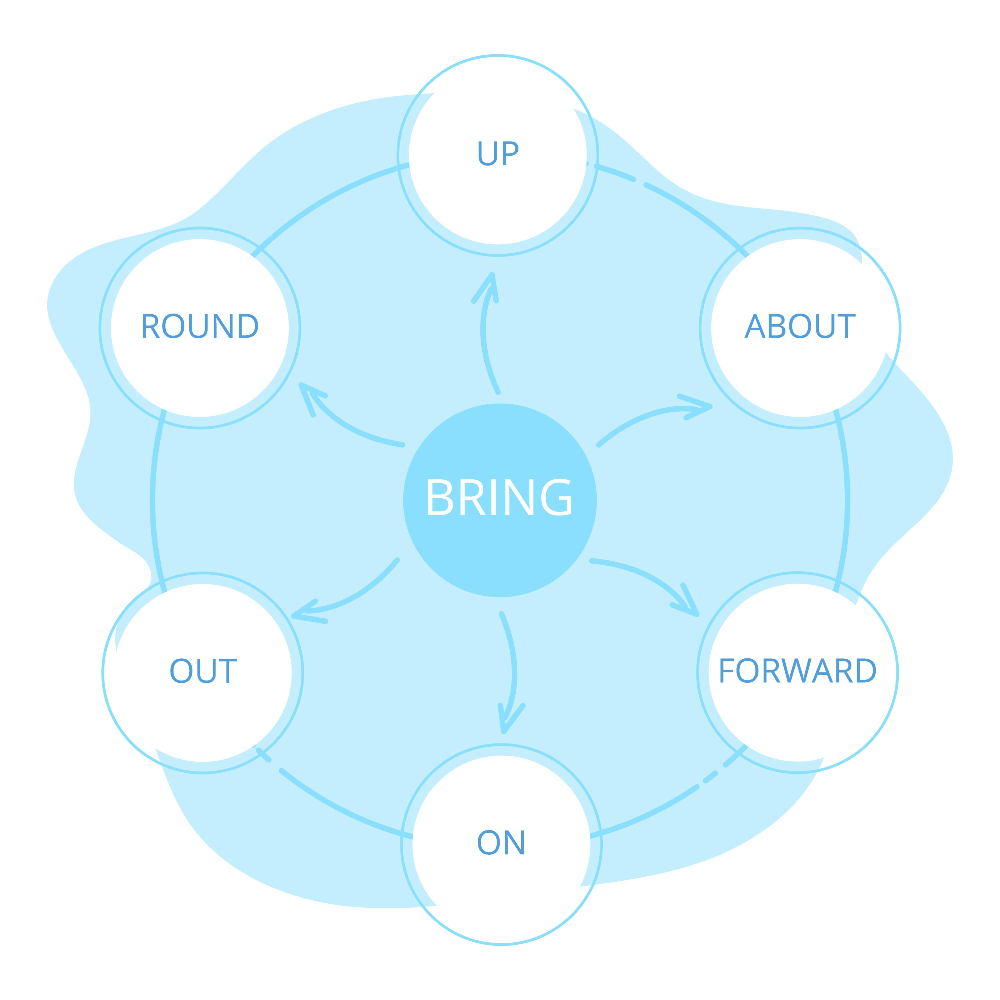

Big Bang mudel on tarkvaraarenduse lähenemine, kus puudub range planeerimine ja struktuur. Kogu energia ja ressursid suunatakse koheselt arendusse, lootes, et protsessi lõpus tekib toimiv toode.
Erinevalt teistest mudelitest (nt Kosk või Agiilne) ei ole siin selgeid etappe. Protsess on lineaarne ja voolav:
Big Bang mudelil ei ole ametlikke alamvariante, kuna see on definitsiooni poolest struktureerimata. Kui lisada reegleid või alamvariante, muutuks see juba mõneks muuks mudeliks (näiteks Agiilseks mudeliks, millel on alamvariandid nagu Scrum või Kanban).
Visuaalselt näeb mudel välja järgmine:
Selle mudeli tähtsaim omadus on planeerimise ja analüüsi puudumine. See on oluline, sest see muudab mudeli sobivaks väga väikeste projektide või õppe-eesmärkide jaoks, kus dokumentatsioon raiskaks asjatult aega, kuid see muudab selle ka kõige ohtlikumaks valikuks ärikriitiliste süsteemide puhul.
| Head küljed (Plussid) | Vead (Miinused) |
|---|---|
| Väga lihtne hallata (juhtimist pole vaja). | Väga suur risk ebaõnnestuda. |
| Ideaalne väikestele projektidele ja õpilastele. | Ei sobi keeruliste süsteemide jaoks. |
| Arendaja saab kohe alustada. | Eelarve ja ajakulu on raske prognoosida. |